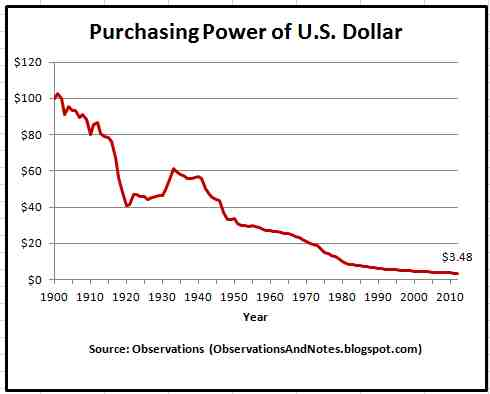

Day01|前言：區塊鏈的誕生
用共識來信任
區塊鏈簡而言之是透過共識來解決信任的問題，不只有區塊鏈如此，共識實質上決定現實中許多東西，比方說公眾人物的風評或是市場上的價值 ：股票或黃金的價值就是透過共識決定出來的，如果世界上有一群人覺得黃金目前的價格被嚴重低估，為了追求利潤他們就會買入黃金同時使價格被拉高到一定的水準，但如果有另一群人覺得黃金目前的價格被嚴重高估，他們就會賣出手上的黃金避險，也連帶使價格拉低，如此反覆直到價格維持在大眾的共識上下進行動態平衡，這也是市場經濟的原理。
共識如何被形塑
但說的簡單，共識的形塑往往並非那麼單純與透明，過程也不全然完全由大眾掌握，以剛剛的交易過程為例，現實中的交易我們是透過中間人(銀行或券商)來知道所有人願意出的價格，這個過程中我們信賴券商所提供的資訊並藉此做出反應，但券商有沒有可能造假或是透過資訊的優先來營利？另一個常見的例子是貨幣，貨幣由政府發行，我們基於信賴政府的公信力或強制力而願意收受政府發行的法定貨幣，並且在大部分的時間裡我們信任政府會維持貨幣的穩定發行與價值。但政府有沒有可能失信？當然有，而且濫發鈔票造成的惡性通膨在歷史上屢見不鮮。
你的錢不是你的錢
2008年的金融風暴讓人們開始認知到銀行不一定可以被信任，銀行收走我們的錢後並沒有有效的管控，而貨幣持續的通貨膨脹，在過去120年來讓貨幣的購買力下跌了30倍，截至今天也還在下跌中。

圖片來源：Observations
貨幣購買力下降的主因除了經濟成長外，也與政府不斷發行新貨幣進入市場有相關，小幅的通貨膨脹是正常的經濟活動，但貨幣流通量增加的速度實際上遠遠超出你我的想像，下圖是美金流通量的歷史。

圖片來源：Gold Silver Worlds
所以問題來了，要怎麼信任你手中的貨幣在未來是有價值的？但除了政府之外，又能相信誰具有公信力可以發行大家都能接受的貨幣？又怎能保證發行者在未來不會繼續超發呢？除了被政府法規管制與規範的銀行外，誰又有能力幫大眾保管資產或交易？

圖片來源：BMG Group Inc.
Be your own bank.
Bitcoin一開始便是為了解決誰可以是有公信力的發行者、誰又可以是公正的保管者的問題。中本聰提供的解決方案就是把貨幣的發行與詮釋權發還給大眾，並搭配密碼學來確保大眾手上的資料難以被竄改(這也是為什麼有時候會被叫成加密貨幣)，也就是人人手上都可以有帳本、每個人都是銀行來保證了共識的公正與執行，也因此Bitcoin的最初願景便是"Be your own bank."。值得一提的是區塊鏈並不是非常新的概念，銀行間很早就以類似分散式帳本的技術在做資料的交換與溝通，但狹義的公鏈與傳統分散式帳本最大的不同就是Permissionless，也就是你若有意願加入並分享帳本的話並不需要任何人的允許，透過成員間的自由的加入與退出來達成去中心化與社群共治的目標。
值得一提的是，數位資產的概念早在區塊鍊之前就已經出現，那時候已經能夠以非對稱加密的數位簽章(之後會再提)來核可與發送交易，而中本聰的貢獻則是嘗試以P2P網路的形式解決了同一筆資產可能會重複被花用的狀況(雙花攻擊，之後也會再提及)。下面這行字是來自於Bitcoin白皮書的原文：
Digital signatures provide part of the solution, but the main benefits are lost if a trusted third party is still required to prevent double-spending. We propose a solution to the double-spending problem using a peer-to-peer network.
系列文的架構
區塊鏈日新月異，至今也在不斷改變與成長中，為了瞭解區塊鍊的架構，明天開始會先探討如何利用密碼學與python建立一個最基礎簡單的區塊鏈，並從中了解到區塊鏈運行過程中需要哪些領域的基礎知識，再分別細談這些基礎知識中的密碼學、P2P網路、共識後，最後看看這些東西是如何出現在現實中的區塊鏈(以Bitcoin、Ethereum為主)。
區塊鏈每年都在變，但基礎架構與科學是不變的，期望透過簡單復刻→基礎理論解說→實際例子的過程中掌握區塊鏈的核心概念，即便有下一世代的區塊鏈出現，也可以很快掌握住。